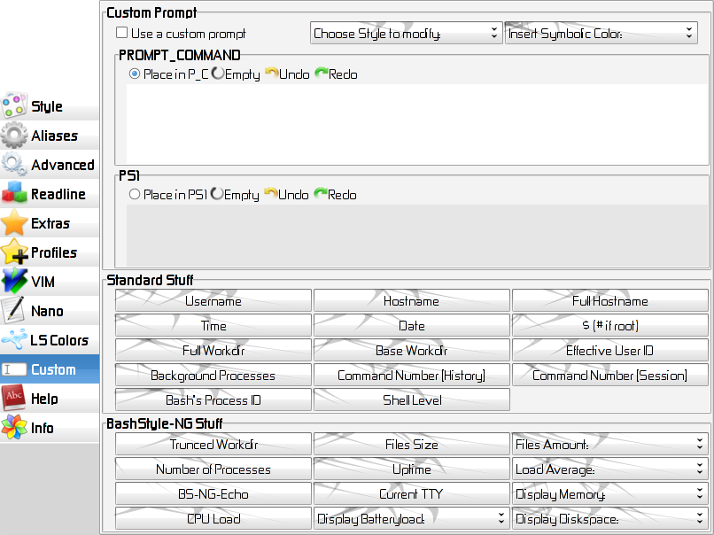

Chapter 7: Custom

7.1 Use a custom prompt
Use the custom prompt set up here.
7.2 Choose Style to modify
Insert an internal style, to modify it.
7.3 Insert Symbolic Color
BashStyle-NG uses "symbolic colors", which you can adjust, eg $username.
Use this to put some in your prompt. Unless like adding color-codes
directly, this gives you the opportunity to change the colors via BS-NG.
For more notes on colors, see 7.7
7.4 PS1
Put your prompt here.
7.5 PROMPT_COMMAND
Put your PROMPT_COMMAND (anything to be done before PS1) here.
Note: You can't use colors directly with echo!
You have to prepend `e' to them, eg: $ewhite instead of $white.
7.6 Show Toolbox
Open the toolbox for adding usefull stuff to your prompt.
7.6.1 Standard Stuff
Built-in stuff for your prompt
- Username: your username
- Hostname: your machines hostname (cut at the `.')
- Full Hostname: your machines hostname
- Time: current time
- Date: current date
- $: displays `$' if you're an ordinary user, `#' if you're root
- Full Workdir: complete working directory (eg: /home/chris/Desktop/test/)
- Base Workdir: current directory (eg: test)
- Effective User ID: your user id
- Background Processes: number of processes running in the background
- Command Number [History]: number of the current command (in history)
- Command Number [Session]: number of the current command (in current session)
- Bash's Process ID: process id of bash
- Shell Level: the shell level (each sub-shell increases it by 1)
- Time since Bash started: self-explaining
7.6.2 BashStyle-NG Stuff
Put Stuff provided by BashStyle-NG into your prompt
See Chapter 8 for more infos on that.
7.7 Colors
List of available colors:
- black
- red
- green
- yellow
- blue
- magenta
- cyan
- white
(Note: the following colors might be incompatible with your Terminal!)
- coldblue
- smoothblue
- iceblue
- turqoise
- smoothgreen
- winered
- brown
- silver
- ocher
- orange
- purple
- pink
- cream
Those colors are only suitable for PS1 & Co! If you want to use those colors
with echo or PROMPT_COMMAND, you have to prepend `e', eg ewhite instead of white
and so on. example usage: echo -e "${eblue}HELLO ${egreen}WORLD"
Besides there are also symbolic colors available for PS1 & Co.
List of available symbolic colors:
- usercolor
- hostcolor
- datecolor
- timecolor
- wdircolor
- fontcolor
- sepacolor
- upcolor
- pscolor
Those colors can be easily changed via the `Change Color' comboboxes in BS-NG
example of usage: PS1="${usercolor}\u${sepacolor} @${hostcolor}\h${fontcolor}: \$ >"